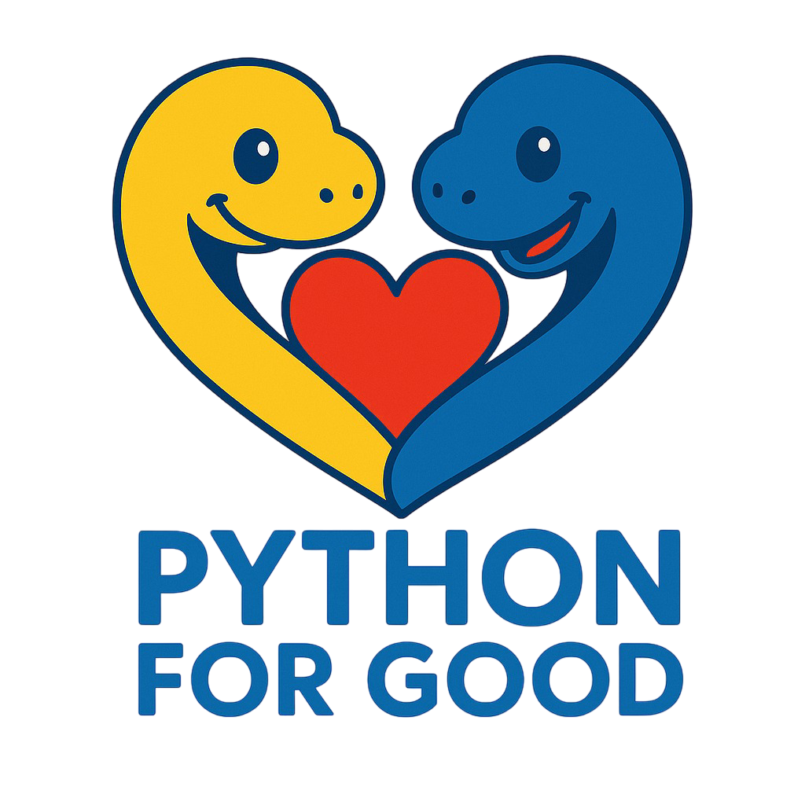

The Python for Good event is an annual event based out of the DC area where programmers from all over the globe get together over a long weekend to build projects that help our communities. Think hanging out in a communal space for a weekend with developers and designers to build something useful for nonprofits and social sector organizations. After the event the projects live on as open source projects.
Python for Good is organized by Code for Good, the same nonprofit that organizes Ruby for Good. We're bringing that same sense of community and collaboration to the Python ecosystem.
Lots of organizations need the sort of technical help we can provide but are unable to afford it. We want to be the do-gooders that volunteer to solve non-profit business/technical problems. Very little effort on our part can make a huge difference to a non-profit. We want to help!
The software we build isn't throwaway code – it's maintained into the future and makes a real difference in the world.
Registration for Python for Good 2025 will be approximately $500 when registration opens. We work diligently to keep costs as affordable as possible while providing an exceptional experience. Your registration fee is comprehensive and includes:
Code for Good is a volunteer-run and volunteer-led nonprofit. Any funds raised beyond event costs go directly to supporting the organizations and projects we serve throughout the year.
Python for Good 2025 will be held at Shepherds Spring Retreat Center, located in the DC area. The venue offers both inspiring natural surroundings and a comfortable collaborative environment perfect for our project work.
The retreat center features meeting spaces for our project work, on-site accommodations, and beautiful grounds—perfect for our scheduled outdoor activities and impromptu breaks during the event.
No. This is definitely not a hackathon. Sean cringes everytime someone mentions 'hackathon' and 'Python for Good' in the same sentence. (Try it.)
The work we do continues on after the event and is not just a weekend of coding. We are building real projects for real organizations that will be used long after the event is over.
Unlike hackathons, we place a strong emphasis on community building, that's why we have campfires with s'mores, board games, and a fun outdoor activity planned. We want to build a community of people who care about doing good and are willing to help out.
All experience levels are welcome! We have a wide variety of skill levels ranging from those who have next to no experience, all the way up to very senior people who work at places like Github and Netflix.
The event is as much about learning as it is about building great things. Groups are very collaborative and you'll definitely have the opportunity to work closely with others on a variety of tasks.
We are open to anyone who is interested in helping out. We'll definitely put you to work if you attend regardless of your skill set!
You don't HAVE to be a Python programmer but it does help. We're more than happy to welcome programmers of other languages, especially if you're interested in learning some Python. We especially would love to have people with Javascript and DevOps experience attend.
Code for Good has a great reputation in the community and because of that organziations reach out. In fact we have many more organizations needing help than we are able to help. That said, if you volunteer somewhere or know of an organization that can use our help, get in touch!
Have a project you're jonesing to work on? end us an email: sean@pythonforgood.org
This year projects are focused around mental health and families and we have some great organizations lined up! We'll announce project details, including available teams to join, around the beginning of August after registration closes.
During registration we'll ask if you'd like to lead a team - say yes! We'll be in touch in early July with potential projects. We'll brief you on expectations and put you in touch with your non-profit so you can work with them in advance of the event to set up project requirements, milestones and initial set up so you can hit the ground running with your team at Python for Good.
Setup includes creating a github repo under the Python for Good github, filing issues and making some technology suggestions.
In general, leading a team entails connecting with stakeholders, initial architecting, planning out project milestones, and keeping your team moving forward. Still not sure and want to talk about it with an organizer? Drop us a note.
Unfortunately we're unable to accommodate remote teams during the event but as all of our projects are open source and will continue on after the event you can absolutely take part in doing good!
Python for Good will take place September 11-14, 2025 (Thursday through Sunday).
We're planning to open registration on June 1st, 2025. We will send out an email to our mailing list and post on social media when registration is open.
The event costs money to put on. We try to raise as much as possible through sponsorships and donations but so far this amount has been unable to cover the cost of venue, food, shirts, transportation, and other minutia. By charging a little, we're able to break even for the event.
Yeah, you really do. Teams will be chosen right around that time and you'll spend dinner meeting with your team, chatting about your projects, and getting your environments aligned. We've found the event is most successful, with the most buy-in, when teams are a cohesive bunch from the beginning.
Most of the organizing team is planning on arriving at 10am but feel free to beat us there!
All lodging and meals are provided from Thursday dinner through Sunday lunch. We will have vegetarian and gluten-free options available. If you have any other dietary restrictions, please let us know when you register. Please note that the lodging isn't the four seasons and it may be quite basic.
We have a limited number of scholarship tickets but are unable to provide transportation funds. Criteria for selection includes the ability to get to the DC area on your own, a documented financial need, and a short essay. The scholarship application will be available when registration opens.
After July 4th we will be unable to offer refunds but we will happily help coordinate exchanges until Aug 1st. Drop us an email!
Bring yourself, your laptop, a powersource, some clothes and your favorite boardgames. If you anticipate skipping group meals, bring some munchies. If you're a light sleeper, bring earplugs.
All the basics are provided (linens, pillows, beds, towels, etc.) We have a fun outdoor activity planned for one evening so camping chairs, a sweater and maybe some bug spray are highly recommended.
Hop into the #carpool channel in slack for more info!
Drop us a note at sean@pythonforgood.org.